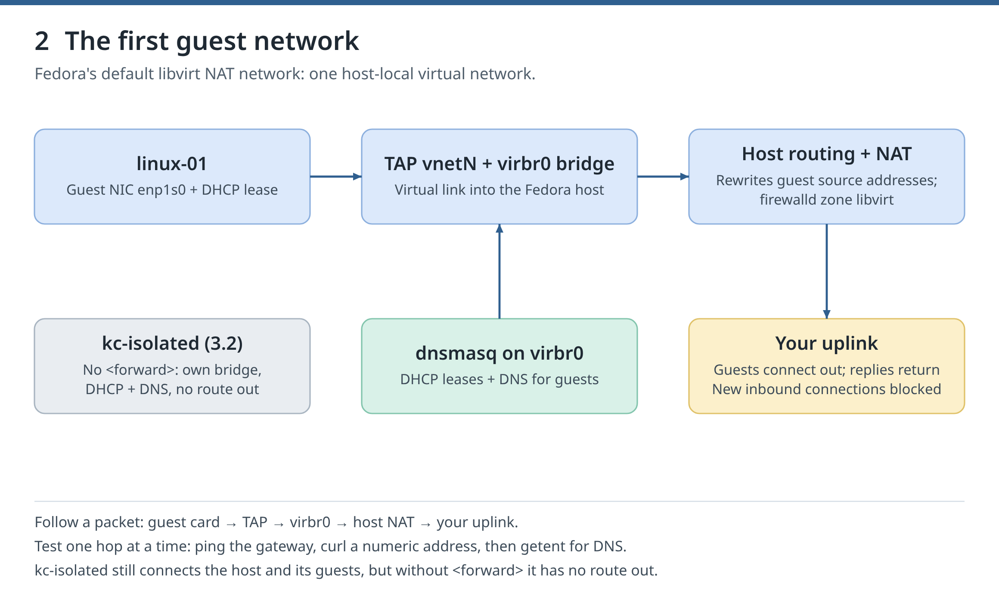

Idea 1 of 8
TAP and bridge
Each guest card in these labs has a host end, a TAP device (vnet0, vnet1, ...): what the guest sends comes out of its TAP on the host. A bridge is a virtual switch in the host kernel, and the TAPs are its ports.
Day 3 of 10
Follow a packet from the guest's card to the Internet, build isolated networks and VLANs, and find a broken virtual link.
You are previewing Day 3. It builds on Day 2, which you have not finished yet. Everything here works, and jumping ahead is allowed.
The same symptom, no reply, can have different causes. One command per layer tells them apart, and no lab tonight touches a physical network card.
about 3 h 20 min: about 2 h 10 min of lab work (authored per section, including waits for VMs to boot and downloads) plus about 1 h 10 min of ideas and checks.
Run today's blocks in bash (type bash first if your terminal runs zsh or fish), in order, in one terminal: some reuse variables that an earlier block set.see Front matter: Setup 4. Work one checkpoint at a time
Chapter 3. Follow a guest's packets from its network card to the Internet, build an isolated network with libvirt, separate guests on a Linux bridge with libvirt's VLAN setting, and locate a broken virtual link with virsh. Read libvirt network XML and the network interfaces part of the domain XML.
Idea 1 of 8
Each guest card in these labs has a host end, a TAP device (vnet0, vnet1, ...): what the guest sends comes out of its TAP on the host. A bridge is a virtual switch in the host kernel, and the TAPs are its ports.
Idea 2 of 8
linux-01 sits on libvirt's default network. A packet leaves the guest's card, comes out of its TAP, crosses the bridge virbr0, is rewritten by the host's NAT and leaves through your uplink. Press play, then click a hop. The table below the diagram is the manual's layer-by-layer checklist.

see 3.1
Idea 3 of 8
The same symptom, no reply, can come from different layers. Change profile-probe's network, its data port's VLAN or its link, and watch which symptom appears and which one command per layer exposes it. Then try Mystery fault and name the layer before the commands are shown.
see 3.4
Idea 4 of 8
From inside the guest: ping the gateway tests the first hop, curl to a numeric address tests the way out through NAT, and getent tests name resolution alone. Fedora guests ask a local DNS stub (127.0.0.53); resolvectl dns shows the real server behind it.
see 3.1
Idea 5 of 8
A libvirt network without a <forward> element is isolated: libvirt forwards none of its packets to other networks. The lab's kc-isolated still gives its bridge an address and DHCP, and dnsmasq answers DNS. On it, profile-probe's route list has no default line, so the guest has no way out, and libvirt would forward none of kc-isolated's packets anyway. The gateway answers because it is on the same network. Back on default, the Internet answers again.
see 3.2
Idea 6 of 8
A VLAN splits one switch into separate groups: each port belongs to a VLAN number, and the bridge forwards frames only between ports of the same VLAN. <vlan><tag id='10'/></vlan> puts a guest's port in VLAN 10 (libvirt supports this on Linux bridges since version 11.0), and update-device moves a running guest's port to another VLAN.
see 3.3
Idea 7 of 8
virsh domif-setlink ... down is like pulling out a card's cable, while the card stays in the guest. The guest shows NO-CARRIER and libvirt reports the link down. A ping fails just as in the VLAN test, yet the cause differs: one command per layer tells them apart.
see 3.4
Idea 8 of 8
Three other ways to connect guests are not covered or validated: macvtap, which puts a guest directly on a host card (the host itself cannot reach the guest through it), Open vSwitch, and a bridge onto your physical LAN. That last one means moving your wired card into the bridge, which changes your host's own connection.
see 3.4
A safe practice shell. It knows today's key commands and answers with the real output recorded in the manual on the validation host. Nothing runs on your machine; the real lab below is where it counts.
These are the manual's validated sections, word for word, as a checklist. Run them on your Fedora 44 host in order. Tick each step after it ran, and tick Check passed once the check holds. Copy buttons copy the exact command.
Follow a guest's packets from its network card to the Internet, build an isolated network with libvirt, separate guests on a Linux bridge with libvirt's VLAN setting, and locate a broken virtual link with virsh. Read libvirt network XML and the network interfaces part of the domain XML.
Figure 2. Trace the packet before changing a bridge or firewall rule. The first lab deliberately uses host-local NAT.
Each guest network card in this chapter has a host end, a TAP device (vnet0, vnet1, …): what the guest sends comes out of its TAP on the host. A bridge is a virtual switch in the host kernel, and TAPs are its ports. No lab here touches a physical network card, so your own connection keeps working. Blocks in parentheses stop at their first failing command (chapter 0.3).
Reuse linux-01, or rebuild it with the chapter 1.7 scripts.
If you removed the course, save the 1.7 scripts again first. new-guest.sh starts linux-01 if it is off, or builds it if it is missing:
export LC_ALL=C
bash ~/kvm-course/bin/new-guest.sh linux-01The last two lines; the lines before them vary:
status: done
linux-01The last lines are status: done and linux-01.
No such file or directory: save the 1.7 scripts. exists and is not a course guest: a VM of yours is called linux-01; leave it alone and do not run the course on this host (chapter 1.4). Otherwise read the STOP: line or the cloud-init or SSH message it printed.
Keep linux-01.
See each hop between linux-01 and the Internet, and test the gateway, the route out and DNS one at a time.
linux-01 uses libvirt's default network (chapter 0.4): the bridge virbr0, where dnsmasq hands out addresses (DHCP) and answers DNS. NAT (network address translation) rewrites the guests' private source addresses to the host's. Guests can open connections to outside networks and get the replies; libvirt's firewall rules block new connections that start outside. The host can reach the guests, and the guests on default can reach one another. On the host, domiflist names linux-01's TAP, bridge link shows each TAP plugged into its bridge, and firewalld lists virbr0 in its libvirt zone, which by default lets guests reach the host itself only for ping, DHCP, DNS, SSH and TFTP:
mkdir -p ~/kvm-course/ch03
sudo virsh -c qemu:///system net-dumpxml default
sudo virsh -c qemu:///system domiflist linux-01
bridge link show
ip -brief address show virbr0
sudo firewall-cmd --get-active-zonesNow look from inside the guest. ssh linux-01 'bash -se' runs the lines up to the GUEST marker in a shell in the guest (-s: read commands from input, -e: stop at the first failing one). ping tests the first hop, the gateway on virbr0. curl to a numeric address tests the way out through NAT without DNS. getent tests name resolution alone. Fedora guests ask a local DNS stub (127.0.0.53); resolvectl dns shows the real server behind it:
ssh -F ~/kvm-course/ssh/config linux-01 'bash -se' <<'GUEST'
set -euo pipefail
ip -brief address
ip route
resolvectl dns
gateway=$(ip route show default | awk '{print $3}')
ping -c 2 -W 2 "$gateway"
curl -sS --max-time 10 -I http://1.1.1.1
getent hosts fedoraproject.org
GUESTExcerpt from the validation run; names, addresses and MACs differ on your machine:
vnet103 network default virtio 52:54:00:11:b3:0f
870: vnet103: <BROADCAST,MULTICAST,UP,LOWER_UP> mtu 1500 master virbr0 state forwarding priority 32 cost 2
virbr0 UP 192.168.122.1/24
libvirt
interfaces: virbr0
default via 192.168.122.1 dev enp1s0 proto dhcp src 192.168.122.251 metric 100
Link 2 (enp1s0): 192.168.122.1
2 packets transmitted, 2 received, 0% packet loss, time 999ms
HTTP/1.1 301 Moved Permanently
35.90.167.38 fedoraproject.orgDraw guest card → TAP → virbr0 → host NAT → your uplink, and name the guest's DNS server.
No ping reply: check the guest's address and that its TAP is on virbr0. Ping works but numeric curl fails: check the host's own Internet access. Only getent fails: DNS is the problem, not the path.
Keep linux-01 on NAT for comparison.
Show that a network without a route out still connects the host and its guests.
A libvirt network without a <forward> element is isolated: libvirt forwards none of its packets to other networks. The XML below also gives its bridge an address and turns on DHCP, and dnsmasq answers DNS. First build a disposable second guest, profile-probe, with chapter 1's helper:
bash ~/kvm-course/bin/new-guest.sh profile-probeDefine the network kc-isolated on 192.168.250.0/24 and start it. The block first stops if the name exists or if your host already uses part of that range: ip route show root lists the host's routes inside the range, match lists routes that contain it, and any line except the default route (which contains every address) means the range is taken:
(
set -euo pipefail
if sudo virsh -c qemu:///system net-info kc-isolated >/dev/null 2>&1; then
echo 'STOP: kc-isolated already exists'; false
fi
if { ip -4 route show root 192.168.250.0/24; ip -4 route show match 192.168.250.0/24; } | grep -v '^default'; then
echo 'STOP: your host already uses 192.168.250.0/24; choose another range'; false
fi
cat > ~/kvm-course/ch03/isolated.xml <<'XML'
<network>
<name>kc-isolated</name>
<bridge name='virbr-kciso'/>
<ip address='192.168.250.1' netmask='255.255.255.0'>
<dhcp><range start='192.168.250.100' end='192.168.250.150'/></dhcp>
</ip>
</network>
XML
sudo virsh -c qemu:///system net-define ~/kvm-course/ch03/isolated.xml
sudo virsh -c qemu:///system net-start kc-isolated
)Move profile-probe's card to kc-isolated: stop the guest, change the card's network in the saved definition with virt-xml (from the virt-install package; it edits a domain's XML from the command line, and --edit 1 picks the first card), start it, and let trust.sh find its new address:
(
set -euo pipefail
bash ~/kvm-course/bin/stop-guest.sh profile-probe
sudo virt-xml --connect qemu:///system profile-probe --edit 1 --network network=kc-isolated
sudo virsh -c qemu:///system start profile-probe
bash ~/kvm-course/bin/trust.sh profile-probe
)The guest gets a lease and reaches the host's end of the bridge, but it has no default route, so the Internet is out of reach:
sudo virsh -c qemu:///system net-dhcp-leases kc-isolated
ssh -F ~/kvm-course/ssh/config profile-probe 'bash -se' <<'GUEST'
set -euo pipefail
ip route
ping -c 2 -W 2 192.168.250.1
if curl -sS --max-time 5 -I http://1.1.1.1; then echo 'UNEXPECTED: the isolated guest reached the Internet'; false; fi
echo 'expected: no route out of kc-isolated'
GUESTPut the card back on default and repeat the Internet test. It works again, so the guest itself was never broken:
(
set -euo pipefail
bash ~/kvm-course/bin/stop-guest.sh profile-probe
sudo virt-xml --connect qemu:///system profile-probe --edit 1 --network network=default
sudo virsh -c qemu:///system start profile-probe
bash ~/kvm-course/bin/trust.sh profile-probe
ssh -F ~/kvm-course/ssh/config profile-probe 'curl -sS --max-time 10 -I http://1.1.1.1'
)Excerpt; addresses, MACs and times differ:
2026-10-02 01:30:18 52:54:00:74:f6:cd ipv4 192.168.250.142/24 profile-probe 01:52:54:00:74:f6:cd
192.168.250.0/24 dev enp1s0 proto kernel scope link src 192.168.250.142 metric 100
2 packets transmitted, 2 received, 0% packet loss, time 1045ms
curl: (7) Failed to connect to 1.1.1.1 port 80 after 0 ms: Could not connect to server
expected: no route out of kc-isolated
HTTP/1.1 301 Moved PermanentlyThe route list has no default line, so the guest has no way out; libvirt would forward none of kc-isolated's packets anyway. The gateway answers because it is on the same network.
On kc-isolated the gateway answers and the Internet does not; back on default, the Internet answers.
STOP: your host already uses 192.168.250.0/24: replace 192.168.250 everywhere in this section with a free range. trust.sh stops after three minutes without a message: the guest got no lease; check its card with sudo virsh -c qemu:///system domiflist profile-probe and read sudo cat /var/log/libvirt/qemu/profile-probe-console.log. trust.sh stops at the fingerprint: never bypass host-key checking.
Keep profile-probe, now back on default, for 3.3. The chapter Clean up removes kc-isolated.
Connect both guests to a bridge of your own, then separate and rejoin them with libvirt's VLAN setting.
A VLAN (virtual LAN) splits one switch into separate groups: each port belongs to a VLAN number, and the bridge forwards frames only between ports of the same VLAN. Create the bridge kc-br with VLAN filtering on, and bring it up. It has no IP address and no physical port, so it links guests only to each other. It disappears when the host restarts:
(
set -euo pipefail
if ip link show kc-br >/dev/null 2>&1; then echo 'STOP: kc-br already exists'; false; fi
sudo ip link add kc-br type bridge vlan_filtering 1
sudo ip link set kc-br up
)Give each guest a second card on kc-br, in VLAN 10. In this XML, type='bridge' plugs the TAP into an existing bridge, <vlan><tag id='10'/> puts its port in VLAN 10 (libvirt supports this on Linux bridges since version 11.0), and <target dev> names the TAP. sed makes profile-probe's copy with another MAC and TAP name. --live attaches the card to the running guest only; it is gone after the guest stops:
cat > ~/kvm-course/ch03/linux-01-vlan.xml <<'XML'
<interface type='bridge'>
<mac address='52:54:00:03:30:01'/>
<source bridge='kc-br'/>
<vlan><tag id='10'/></vlan>
<target dev='kc-l01'/>
<model type='virtio'/>
</interface>
XML
sed 's/30:01/30:02/; s/kc-l01/kc-pp/' ~/kvm-course/ch03/linux-01-vlan.xml > ~/kvm-course/ch03/profile-probe-vlan.xml
sudo virsh -c qemu:///system attach-device linux-01 ~/kvm-course/ch03/linux-01-vlan.xml --live
sudo virsh -c qemu:///system attach-device profile-probe ~/kvm-course/ch03/profile-probe-vlan.xml --live
bridge vlan showGive the new cards fixed addresses. Save this guest script: it waits up to 30 seconds for the card with the MAC given as $1 (timeout limits one command, hence bash -c), tells NetworkManager to leave that card alone, and sets the address $2 with ip. Nothing is saved in the guest, so the address goes away with the card:
cat > ~/kvm-course/ch03/data-ip.sh <<'GUEST'
set -euo pipefail
timeout 30 bash -c "until ip -br link | grep -q $1; do sleep 1; done"
iface=$(ip -br link | awk -v mac="$1" '$3 == mac {print $1}')
sudo nmcli device set "$iface" managed no
sudo ip address add "$2" dev "$iface"
sudo ip link set "$iface" up
ip -br address show "$iface"
GUEST
ssh -F ~/kvm-course/ssh/config linux-01 bash -s 52:54:00:03:30:01 172.30.77.1/24 < ~/kvm-course/ch03/data-ip.sh
ssh -F ~/kvm-course/ssh/config profile-probe bash -s 52:54:00:03:30:02 172.30.77.2/24 < ~/kvm-course/ch03/data-ip.sh
ssh -F ~/kvm-course/ssh/config linux-01 'ping -c 2 -W 2 172.30.77.2'Move profile-probe's port to VLAN 20: change the tag in its file and apply it to the running guest with update-device, which finds the card by its MAC. Now the bridge keeps the two ports apart. Ping's exit status 1 means "no reply"; any other failure, such as an SSH error, is not a pass:
(
set -euo pipefail
sed -i "s/tag id='10'/tag id='20'/" ~/kvm-course/ch03/profile-probe-vlan.xml
sudo virsh -c qemu:///system update-device profile-probe ~/kvm-course/ch03/profile-probe-vlan.xml --live
bridge vlan show dev kc-pp
if ssh -F ~/kvm-course/ssh/config linux-01 'ping -c 2 -W 2 172.30.77.2'; then
echo 'UNEXPECTED: VLAN 10 reached VLAN 20'; false
elif [ $? -eq 1 ]; then
echo 'expected: no reply across VLANs'
else
echo 'FAILED: SSH or ping error'; false
fi
)Put the port back in VLAN 10; the ping works again:
(
set -euo pipefail
sed -i "s/tag id='20'/tag id='10'/" ~/kvm-course/ch03/profile-probe-vlan.xml
sudo virsh -c qemu:///system update-device profile-probe ~/kvm-course/ch03/profile-probe-vlan.xml --live
bridge vlan show dev kc-pp
ssh -F ~/kvm-course/ssh/config linux-01 'ping -c 2 -W 2 172.30.77.2'
)Excerpt; interface names and times differ:
kc-l01 10 PVID Egress Untagged
kc-pp 10 PVID Egress Untagged
enp7s0 UP 172.30.77.1/24 fe80::5054:ff:fe03:3001/64
enp7s0 UP 172.30.77.2/24 fe80::5054:ff:fe03:3002/64
2 packets transmitted, 2 received, 0% packet loss, time 1039ms
kc-pp 20 PVID Egress Untagged
2 packets transmitted, 0 received, 100% packet loss, time 1023ms
expected: no reply across VLANs
kc-pp 10 PVID Egress Untagged
2 packets transmitted, 2 received, 0% packet loss, time 1009msPVID means untagged frames from the guest join that VLAN; Egress Untagged means frames leave toward the guest without a VLAN tag, so the guest needs no VLAN setup.
Same VLAN: replies. VLAN 10 to VLAN 20: no reply. Back in VLAN 10: replies.
Check one layer at a time: the guest's address (ip -br address in the guest), the TAP on kc-br (bridge link show), its VLAN (bridge vlan show).
Keep both data cards for 3.4.
Break one virtual link on purpose, then find it layer by layer.
domif-setlink sets a card's link state: down is like pulling out its cable, while the card stays in the guest. Pull profile-probe's data cable; the ping fails, just as in the VLAN test:
(
set -euo pipefail
sudo virsh -c qemu:///system domif-setlink profile-probe kc-pp down
if ssh -F ~/kvm-course/ssh/config linux-01 'ping -c 2 -W 2 172.30.77.2'; then
echo 'UNEXPECTED: the unplugged card replied'; false
elif [ $? -eq 1 ]; then
echo 'expected: no reply'
else
echo 'FAILED: SSH or ping error'; false
fi
)Find the cause. The guest shows NO-CARRIER on its data card, libvirt reports the link down, and the bridge port is still in VLAN 10:
ssh -F ~/kvm-course/ssh/config profile-probe 'ip -br link'
sudo virsh -c qemu:///system domif-getlink profile-probe kc-pp
bridge vlan show dev kc-ppPlug the cable back in:
sudo virsh -c qemu:///system domif-setlink profile-probe kc-pp up
ssh -F ~/kvm-course/ssh/config linux-01 'ping -c 2 -W 2 172.30.77.2'Excerpt; interface names and times differ:
expected: no reply
enp7s0 DOWN 52:54:00:03:30:02 <NO-CARRIER,BROADCAST,MULTICAST,UP>
kc-pp down
kc-pp 10 PVID Egress Untagged
2 packets transmitted, 2 received, 0% packet loss, time 1010msThe same symptom, no reply, had a different cause in 3.3 and 3.4, and one command per layer told them apart (virsh stands for sudo virsh -c qemu:///system):
| Layer | Command | Finds |
|---|---|---|
| Guest card | ip -br link and ip -br address in the guest | missing card, no carrier, wrong address |
| Virtual cable | virsh domif-getlink DOMAIN TAP | link set down |
| Bridge port | bridge link show, bridge vlan show | TAP on the wrong bridge or VLAN |
| Route and NAT | ip route in the guest, virsh net-dumpxml NETWORK | no route out |
| DNS | resolvectl dns, getent hosts | names fail while addresses work |
Ping still fails after up: wait a few seconds and repeat it; the guest needs a moment to see the carrier.
The link is up again. The chapter Clean up removes the data cards.
Three other ways to connect guests are not covered or validated here. macvtap puts a guest directly on a host network card without a bridge, but the host itself cannot reach the guest through that card, and Wi-Fi cards usually cannot carry the guests' extra MAC addresses. Open vSwitch is a programmable switch that libvirt also supports (<virtualport type='openvswitch'/>). Putting guests on your physical LAN through a bridge means moving your wired card into it, which changes your host's own connection.
Keep linux-01 for chapter 4. Remove linux-01's data card if it is still attached (a shutdown has already removed it), then the disposable guest and the bridge:
(
set -euo pipefail
if sudo virsh -c qemu:///system domiflist linux-01 | grep 52:54:00:03:30:01 >/dev/null; then
sudo virsh -c qemu:///system detach-interface linux-01 bridge --mac 52:54:00:03:30:01 --live
fi
bash ~/kvm-course/bin/remove-guest.sh profile-probe
if ip link show kc-br >/dev/null 2>&1; then sudo ip link delete kc-br; fi
)Stop and remove the isolated network. libvirt leaves the stopped network's dnsmasq PID file behind, so delete it too (-v names it), then this chapter's files:
(
set -euo pipefail
if sudo virsh -c qemu:///system net-info kc-isolated 2>/dev/null | grep '^Active: *yes' >/dev/null; then
sudo virsh -c qemu:///system net-destroy kc-isolated
fi
if sudo virsh -c qemu:///system net-info kc-isolated >/dev/null 2>&1; then
sudo virsh -c qemu:///system net-undefine kc-isolated
fi
sudo rm -fv /run/libvirt/network/kc-isolated.pid
rm -rf ~/kvm-course/ch03
)To remove the whole course instead, use Appendix B.
Every answer explains itself and links to the manual section it comes from. Tip: with a question focused, keys 1 to 4 pick an answer.
Today's badge
You traced a guest's packets hop by hop and told apart faults that look the same from inside the guest.
Complete the day to earn it.
Tomorrow you map linux-01's backing chain, see where every write lands, flatten and grow disks, and change a chain while the guest runs.
Go to Day 4↑↓ to move, Enter to open, Esc to close